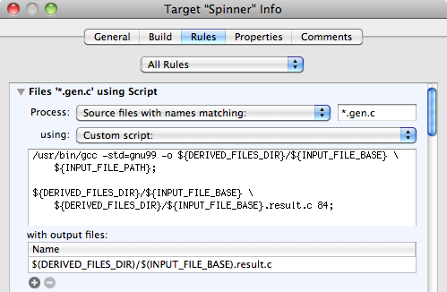

Please note: this article is part of the older "Objective-C era" on Cocoa with Love. I don't keep these articles up-to-date; please be wary of broken code or potentially out-of-date information. Read "A new era for Cocoa with Love" for more.
Custom build rules, generated tables and faster floating point
As fast as computers are, heavy use of floating point functions can still slow them down. One way around this, is to use a lookup table instead of calculating floating point values at runtime. But keeping a generated table up-to-date is annoying work. In this post, I'll show you how to create a lookup table automatically using a custom build rule, making an OpenGL animation 5 times faster in the process.
Introduction
In this post, I'm going to work with a modified version of Apple's default OpenGL ES 1.0 program. In this program, a colored square will spin in the center of the window:
Download the complete project for this post: Spinner.zip (25kb).
To artificially create a situation where this simple program is bound by CPU performance, I will calculate the location of the square thousands of times for every frame.
Initial code and performance
The initial code for updating the model matrix before drawing is:
static float transX = 3.14159265f * 0.5;
static float transY = 0.0f;
for (int i = 0; i < 2e5; i++)
{
translateX = sinf(transX)/2.0f;
translateY = sinf(transY)/2.0f;
doNothingff(&translateX, &transX);
doNothingff(&translateY, &transY);
}
transX += 0.075f;
transY += 0.075f;
glTranslatef((GLfloat)(translateX), (GLfloat)(translateY), 0.0f);This is a very simple calculation: it translates out to the edge of the unit circle and progresses around the circle by 0.075 radians per frame.
The code loops 2e5 (i.e. 20,000) times and passes its variables by reference into a dummy function (to prevent the compiler optimizing the loop away).
On my iPhone 3G, this runs between 5 and 6 frames per second.
Faster with tables
The reason this code is slow, is the sinf() function — the iPhone simply isn't meant for heavy floating point arithmetic.
However, this code only uses 84 steps to get around the circle. We can precalculate all of those points, store them in a table and use the table instead.
static int tableIndexX = -1;
static int tableIndexY = 0;
if (tableIndexX == -1)
tableIndexX = SinTableSize / 4;
for (int i = 0; i < 2e5; i++)
{
translateX = SinTable[tableIndexX];
translateY = SinTable[tableIndexY];
doNothingif(&tableIndexX, &translateX);
doNothingif(&tableIndexY, &translateY);
}
tableIndexX = (tableIndexX + 1) % SinTableSize;
tableIndexY = (tableIndexY + 1) % SinTableSize;
glTranslatef((GLfloat)(translateX), (GLfloat)(translateY), 0.0f);This code is the same as the previous code except instead of calculating each point, it simply steps through an array of values.
The SinTable just looks like this:
const float SinTable[84] =
{
0.000000f,
0.037365f,
0.074521f,
0.111260f,
//... 80 more entries ...
};With the change to a lookup table, the code now runs at 26-28 frames per second. A 5 times speed increase.
Using code to generate code with a build rule
If you've ever used lookup tables, you'll know that they can be annoying to maintain. If you want to change them, you need to regenerate them and then reintegrate them into your project.
With a custom build rule, the regeneration and reintegration can be done automatically.
The code that generates the SinTable looks like this:
enum
{
ProcessName = 0,
OutputFile,
TableSteps,
ArgumentCount
};
int main (int argc, const char * argv[])
{
if (argc != ArgumentCount)
return 1;
FILE *outputFile = fopen(argv[OutputFile], "w");
long tableSteps = strtol(argv[TableSteps], NULL, 10);
fprintf(outputFile, "const float SinTable[%ld] = \n", tableSteps);
fprintf(outputFile, "{\n");
for (long i = 0; i < tableSteps; i++)
{
fprintf(outputFile, " %ff,\n", 0.5f * sinf(i * 2.0f * 3.14159265f / tableSteps));
}
fprintf(outputFile, "\n};\n");
fprintf(outputFile, "const long SinTableSize = %ld;", tableSteps);
return 0;
}I put it in a file named SinTable.gen.c then I added a custom build rule to the target (Project→Edit Active Target→Rules).
The custom build rule looks like this:
What this does is:
- Takes any file that ends in .gen.c
- Compiles it to a .gen file in the Derived files directory
- Executes the .gen program to generate a gen.result.c file in the same directory
- Tells Xcode that it produces the gen.result.c file and Xcode will then build it according to Xcode's standard C compilation rules, integrating it with the rest of the program.
Custom Build Rules versus Custom Build Phases
Many people are familiar with Custom Build Phases for running scripts during their builds. It is important to understand the differences between the two:
| Custom Build Rule | Run Script Custom Build Phase |
| Is an arbitrary /bin/sh script | Is an arbitrary /bin/sh script |
| Runs once for input of a given type | Runs exactly once per build |
| Only runs when an input of the relevant type changes | Runs on either every build (no inputs/outputs specified) or when specifically nominated "input" files are newer than nominated "output" files. |
| Outputs can be automatically picked up by Xcode for further processing by other build rules | Xcode doesn't touch outputs — you must handle all processing yourself |
| Only visible in the Target's Settings window | Visible in the Group Tree by expanding the Target |
Custom Build Rules are ideal for generating files that will be picked up by another build rule (for example, generating source code or .o files). Custom Build Phases are a better option for applying build numbers or handling the final built product.
Conclusion
Download the complete project for this post: Spinner.zip (25kb).
5 times faster, easy to implement and maintain.
Of course, lookup tables have a major limitation: they use memory. This table was only 84 entries long, so there's no real problem but if you need thousands of entries, you'll need to test to make sure you're actually gaining performance. Also, if the table is never in cache (because you're using huge amounts of memory between lookups), you're unlikely to save much time.
The point of this post though was to demonstrate build rules. This build rule keeps the lookup table up-to-date on every build and won't run unless the .gen.c file changes, so it won't recompile unnecessarily. The key strength of the build rule is that it will automatically run on all ".gen.c" files we happen to add to this target and the outputs are automatically picked up by Xcode and compiled and linked with the rest of the target.
These two points are the key advantages of Build Rules in Xcode: running on every file of a given type and integration into the build pipeline. If you only need your script to run once per build (instead of once per file) and you don't need Xcode to further handle the outputs, you can use Run Script Custom Build Phases instead.
Finding the cause of performance issues in your programs
The differences between Core Data and a Database